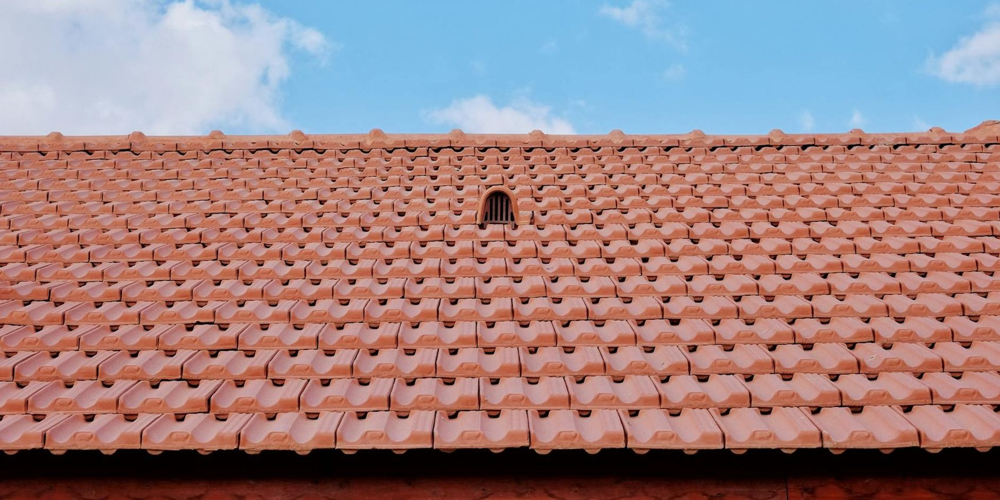
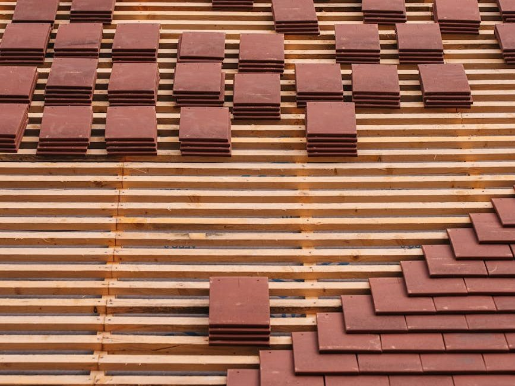
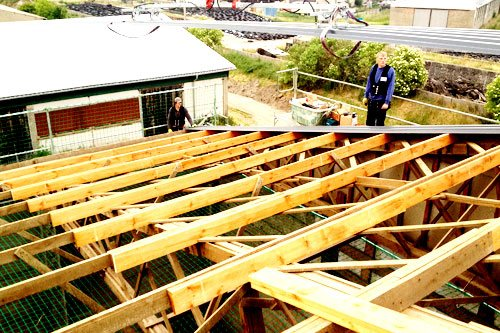
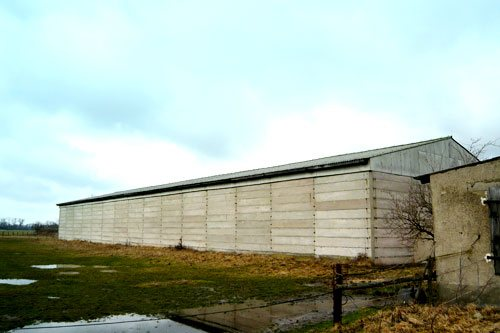
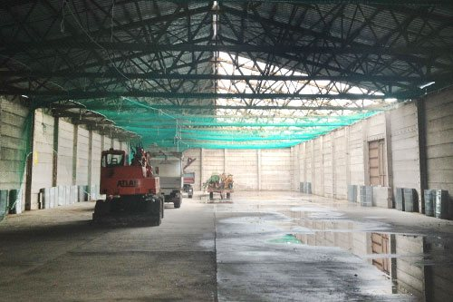
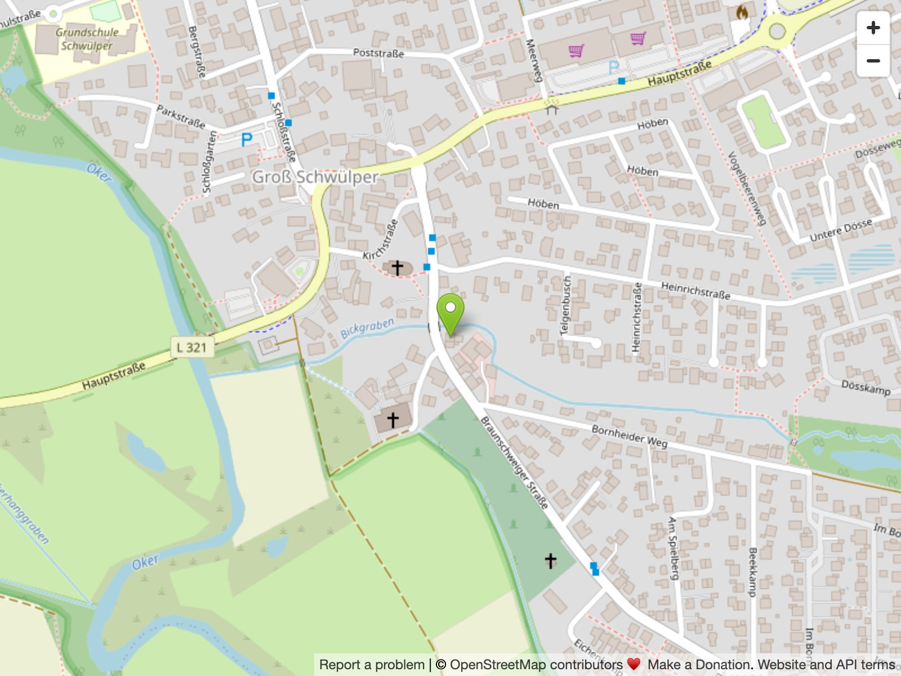

Dachdeckermeister · Schwülper · seit 2010
Wir haben ein Dach im Kopf — Ihres.
Alles aus einer Meisterhand: traditionelle Handwerkskunst und moderne Technik für jede Dachform. Von der Beratung über die Klempnerarbeit bis zur fertigen Eindeckung — bei Ihnen vor Ort.

Meisterbetrieb · Dachdecker-Innung Gifhorn
Meisterbetrieb seit 2010
Dachdecker-Innung Gifhorn
Ausbildungsbetrieb (ZVDH)
HWK Braunschweig-Lüneburg-Stade

Der Meister
Junger Meisterbetrieb,
alte Handwerkskunst.
Was haben wir uns wohl dabei geDACHt, als wir 2010 die Dachdeckerei Pillich gründeten? Vor allem eines: Ihre individuellen Wünsche. Ein Dach ist nie von der Stange — es bildet die Grundlage für individuellen Wohnstil, im Trockenen und stabil bei jeder Witterung.
Deshalb verbinden wir traditionelle Handwerkskunst mit modernster Technik — für exakte Ausführung, hochwertige Materialien und Liebe zum Detail. Verantwortlich für jede Form: Dachdeckermeister Mark Pillich mit seinem qualifizierten Team.
Wir haben ein Dach im Kopf — Ihres.Mark Pillich · Dachdeckermeister
Vielfalt in Form
Jede Dachform ist bei uns zu Hause.
Ob klassisch oder modern — wir führen alle Aufträge rund um Ihr Wunschdach kompetent und verlässlich aus.
Walmdach
Pultdach
Spitzdach
Flachdach
Unser Angebot
Rund ums Dach — aus einer Hand.
Von der einfachen Reparatur bis zum kompletten Neubau: ein breites Spektrum, kompetent und verlässlich ausgeführt.
Dacheindeckung
Neue Eindeckung mit Tonziegel, Betondachstein oder Blech — exakt nach Ihrem Wunsch.
Sanierung & Reparatur
Undichte Stellen, Sturmschäden, Modernisierung — schnell und zuverlässig behoben.
Klempnerarbeiten
Dachrinnen, Fallrohre, Verblechungen und Anschlüsse — sauber und wetterfest.
Neubau & Anbau
Von Anbauten und Umbauten bis zum kompletten Neubauvorhaben — alles aus einer Hand.
Beratung & Planung
Wir beraten Sie zu Stil, Material und Form — für das perfekte Dach mit Charakter.
Flach- & Steildach
Egal ob Satteldach oder Flachdach — fachgerechte Abdichtung und Dämmung inklusive.
Referenzen
Projekte aus der Region.
Ein Auszug unserer Arbeiten — von der Hallendach-Sanierung bis zum neuen Dachstuhl.



Echte Projektfotos der Dachdeckerei Pillich.
Materialvielfalt
Wir finden das passende Material.
Vielfalt in Form, Farbe und Ausstattung — wir setzen auf hochwertige Materialien für Komfort, Sicherheit und individuelle Akzente.
TonziegelBetondachsteinBlechdacheindeckungSchiefer-OptikDämmung
Kontakt
Sprechen Sie uns an.
Schön, dass Sie an uns denken! Wir sind gespannt auf Ihre Herausforderung — rufen Sie an oder schreiben Sie uns, wir melden uns bei Ihnen.
Betrieb
Braunschweiger Straße 11A
38179 Schwülper
38179 Schwülper
Telefon & Mobil

OpenStreetMap